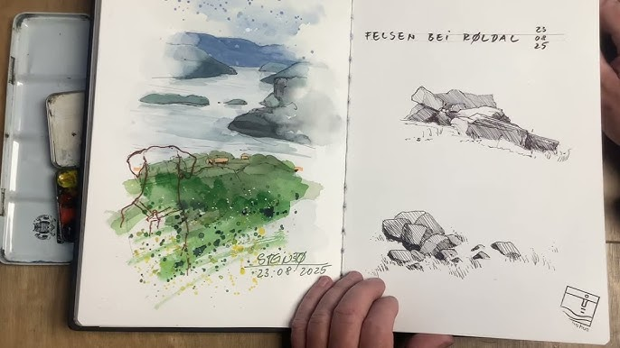

El valor del Sketchbook

El sketchbook es mucho más que un simple cuaderno de dibujo. Es un espacio íntimo donde las ideas respiran, se equivocan, se mezclan y florecen. En sus páginas no hay juicios ni metas; solo la búsqueda constante de explorar lo que llevamos dentro.
Un refugio creativo
Cada trazo en el sketchbook representa un momento genuino de conexión entre la mente y la mano. A diferencia de las obras finales, aquí no importa el resultado, sino el proceso. Es un lugar donde puedes experimentar sin miedo al error y permitir que las ideas fluyan libremente.
De la idea al proyecto
Muchos artistas utilizan sus cuadernos como un mapa de ideas. Un boceto rápido, una paleta de colores o una anotación espontánea pueden convertirse en el punto de partida de una obra completa. En este sentido, el sketchbook es la semilla de cada creación futura.
Revisar páginas antiguas puede inspirarte a retomar ideas que creías olvidadas o encontrar nuevas formas de abordar tu estilo. Es una forma visual de ver tu crecimiento artístico a lo largo del tiempo.
Consejos para aprovechar tu sketchbook
- No busques la perfección: deja que tus ideas fluyan sin juzgarlas.
- Usa materiales diversos: lápiz, tinta, acuarela, collage… lo que te inspire.
- Dedícale unos minutos cada día, aunque solo sea para un garabato.
- Experimenta con el formato: prueba sketchbooks pequeños, grandes o hechos a mano.
Lo más importante es mantener la constancia. Tu sketchbook es un diario visual que documenta tu evolución y tu voz artística única.